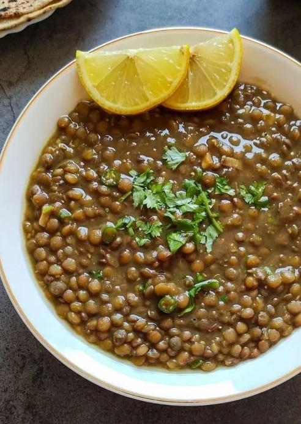

Start here
A table full of stories
From spicy stews and colorful platters to breakfast favorites and traditional drinks, explore Ethiopian food at your own pace.

Recipe
Beyaynetu
A colorful mixed platter that lets several Ethiopian flavors share one table.
View recipe →